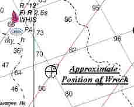

Link Index
MWDC
Home Page
Shipwrecks Page
Albert Galatin
Alice M. Colburn
Alice M. Lawrence
Ardandhu
Barge and Crane
California
Charles S. Haight
Chelsea
Chester Poling
City of Salisbury
Corvan
Dixie Sword
Edward Rich
French Van Gilder
Herbert
Herman Winter
Hilda Garston
HMCS St. Francis
James Longstreet
John Dwight
Kershaw
Kiowa
Lackawanna
Lunet
Mars
Pemberton
Pendleton
Pinthis
Port Hunter
Pottstown
Romance
Seaconnet
Trojan
USS Grouse
USS New Hampshire
USS Triana
USS Yankee
USS YSD
Vineyard Sound
Lightship
|
Description: Schooner barge; Wood
Dimensions: length - 192 ft. width - 35 ft. 11/2in. depth - 8 ft. 21/2in.
Tonnage: gross - 866 other - Dead Weight - 758
Propulsion: Towed
Machinery: Donkey boiler
Cargo: Paving stones
The Shipwreck
Date Sunk: September 18, 1939.
Cause: Foundered.
Location: Plymouth, Off Manomet Point.
Coordinates: Latitude, 41o- 54' - 29.942"N Longitude, 70o- 29' - 8"W
Loran: 13967.7 and 44081.1
Built by the Kelly, Spear Company of Bath, in 1908 she was one of 14, 4 masted schooners launched between 1901 and 1914. By that time, however, the building of schooners was waning. Barges were easier to build, operate and more cost effective. A steam tug could tow more barges, with fewer crewmen and more cargo than any single schooner could carry.
After loading paving blocks from the quarries on Vinalhaven Island, Maine, the Henry Endicott was taken in tow, along with two others, by the steam tug Nottingham bound for New York. While off Manomet Point, Plymouth, Massachusetts, heavy seas parted the schooner's towline and opened her seams. The pumps could not keep up with the in rushing water and soon her crew was forced to launch distress rockets, which attracted the Coast Guard and rescue. Rough seas prevented Nottingham from assisting the stricken barge. She was forced to anchor the second barge in order to tow the third to safety, returning for the second later. Meanwhile the Henry Endicott filled and sank in over 80 feet of water.
Back to Top
Dive Site Conditions
Depth in feet: maximum - ; minimum - .
Visibility in feet: average - .
Click on the image to go to the MapTech Map Server,
for additional navigation information.

Back to Top
Historical Background
Constructed: year - 1908; where - Bath, Maine.
builder - Kelley, Spear & Company.
Construction details: 1 Deck; Transverse Beams; Spruce, Oak and Yellow Pine; Galvanized Iron Fastenings.
Crew: 3 ; Master:
Owners: Delaware, Lackawanna & Western Coal Company.
Home or Hailing Port: New York, N.Y..
Former Name(s) and date(s): .
Official number: 205188.Country: U.S.A..
Other Comments:
Back to Top
Salvage
Back to Top
Sources:
Fishable Wrecks and Rockpiles; Coleman & Soares, 1989
Historical Maritime Group of New England; September 1, 1989
MapTech Mapserver
Merchant Vessels of the United States, Vessels Lost Chapter; 1941
The Maritime History of Bath Maine; Vol.II, 1973
The Record, "American Lloyds", American Bureau of Shipping; 1939
Back to Top
These files are under construction. Any information, specifically dive site related, would be greatfully appreciated.
Send comments to: Chris Hugo
Copyright © 2000 by Christopher C. Hugo
Massachusetts Board of Underwater Archaeological Resources
All Rights Reserved
|